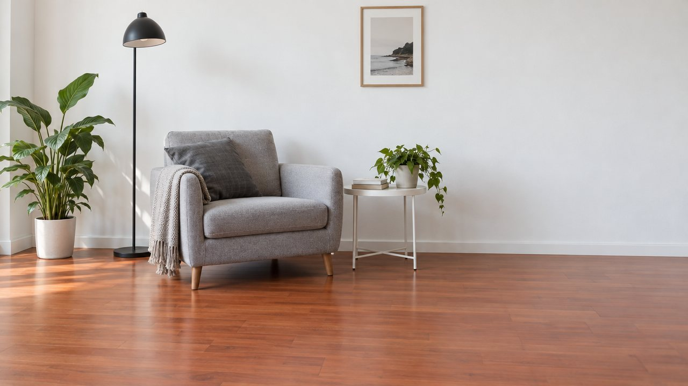

Gebrochenes Weiß
ungefähr #F4F0E6Neutral und hell. Der Boden darf der einzige warme Ton bleiben.
Auf dieser Seite
Planer
Ratgeber
Nachschlagen
So arbeiten wir · Impressum · Datenschutz · Schwesterseite: Strom-Daheim
Vier Farben, die passen, und eine, die du besser lässt. Im Beispielzimmer kannst du sie umschalten.
Zu Buche, Kirsche oder Mahagoni am Boden passen Graugrün, gebrochenes Weiß, Taubenblau und Greige. Grün und Blau dämpfen den Rotstich. Rot, Orange, Rosa und Gelb verstärken ihn.

Gebrochenes WeißNeutral und hell. Der Boden darf der einzige warme Ton bleiben.
Das Bild zeigt die Richtung, nicht den genauen Ton. Farben sehen auf jedem Bildschirm etwas anders aus als an der Wand.
Neutral und hell. Der Boden darf der einzige warme Ton bleiben.
Grün liegt Rot gegenüber und beruhigt den Boden am stärksten.
Kühlt den Raum ab und lässt das Holz edler aussehen.
Zurückhaltend und modern. Gut für Mietwohnungen mit Buchenlaminat.
Rosa, Rot, Orange und Gelb. Sie verstärken den Rotstich, der Boden wirkt dann noch bunter. Auch Creme mit Gelbstich ist heikel.
Nach der 60-30-10-Regel bekommt die Wandfarbe etwa 60 Prozent des Raums, die zweite Farbe 30 Prozent und ein Akzent 10 Prozent.
Abends wird rötliches Holz unter warmem Lampenlicht noch röter. Leuchtmittel mit 3.000 Kelvin sind hier besser als sehr warme mit 2.200.
Streiche ein Stück Karton in der Größe eines Blatts Papier und halte es an zwei Wände. Schau morgens, mittags und abends bei Lampenlicht darauf. Wie das genau geht, steht unter Vor dem Streichen testen.
Kleine Probierdosen gibt es für wenige Euro: Probierfarben bei Amazon suchen Anzeige
Mit einem großen Teppich in Creme oder Graugrün und kühlen Wandfarben. Der Boden bleibt, fällt aber weniger auf.
Ja, als Greige oder Graugrün. Reines kühles Grau lässt den Boden orange wirken.
Alle 20 KombinationenFarbpalette aus deinem ZimmerfotoWandfarbe wählen und kombinieren
Die Empfehlungen folgen den Regeln aus unserem Ratgeber Wandfarbe wählen: Farbkreis, 60-30-10-Regel und Lichtrichtung. Die Quellen stehen dort. Die Farbwerte sind Näherungen.